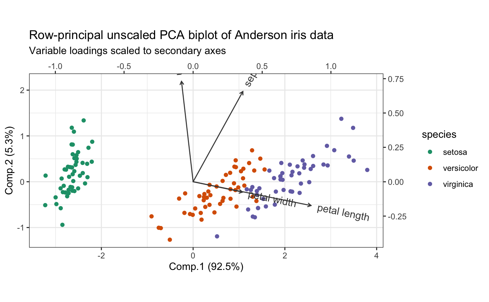

dplyr verbs for tbl_ord factors
dplyr-verbs.RdThese functions adapt dplyr verbs to the factors
of a tbl_ord. The raw verbs are not defined for tbl_ords; instead, each
verb has two analogues, corresponding to the two matrix factors. They each
rely on a common workhorse function, which takes the composition of the
dplyr verb with annotation_*, applied to the factor, removes any
variables corresponding to coordinates or already annotated, and only then
assigns it as the new "*_annotation" attribute of .data (see
annotation).
pull_factor(.data, var = -1, .matrix) pull_u(.data, var = -1) pull_v(.data, var = -1) rename_u(.data, ...) rename_v(.data, ...) select_u(.data, ...) select_v(.data, ...) mutate_u(.data, ...) mutate_v(.data, ...) transmute_u(.data, ...) transmute_v(.data, ...) bind_cols_u(.data, ...) bind_cols_v(.data, ...)
Arguments
| .data | A |
|---|---|
| var | A variable specified as in |
| .matrix | A character string matching one of several indicators for one
or both matrices in a matrix decomposition used for ordination. The
standard values are |
| ... | Comma-separated unquoted expressions as in, e.g.,
|
Examples
# Unscaled PCA and two-scaled biplot of Anderson iris data iris[, -5] %>% princomp() %>% as_tbl_ord() %>% confer_inertia(1) %>% mutate_u(species = iris$Species) %>% mutate_v(measure = gsub("\\.", " ", tolower(names(iris)[-5]))) %>% print() -> iris_pca#> # A tbl_ord of class 'princomp': (150 x 4) x (4 x 4)' #> # 4 coordinates: Comp.1, Comp.2, ..., Comp.4 #> # #> # U: [ 150 x 4 | 1 ] #> Comp.1 Comp.2 Comp.3 ... | species #> | <fct> #> 1 -2.68 0.319 0.0279 | 1 setosa #> 2 -2.71 -0.177 0.210 ... | 2 setosa #> 3 -2.89 -0.145 -0.0179 | 3 setosa #> 4 -2.75 -0.318 -0.0316 | 4 setosa #> 5 -2.73 0.327 -0.0901 | 5 setosa #> # … with 145 more rows #> # #> # V: [ 4 x 4 | 1 ] #> Comp.1 Comp.2 Comp.3 ... | measure #> | <chr> #> 1 0.361 0.657 0.582 | 1 sepal length #> 2 -0.0845 0.730 -0.598 ... | 2 sepal width #> 3 0.857 -0.173 -0.0762 | 3 petal length #> 4 0.358 -0.0755 -0.546 | 4 petal widthiris_pca %>% ggbiplot(aes(color = species), sec.axes = "v", scale.factor = 3) + theme_bw() + scale_color_brewer(type = "qual", palette = 2) + geom_u_point() + geom_v_vector(color = "#444444") + geom_v_text_radiate(aes(label = measure), color = "#444444") + ggtitle( "Row-principal unscaled PCA biplot of Anderson iris data", "Variable loadings scaled to secondary axes" )# Confer inertia in CA between rows and columns of benthic sample data benthos %>% ca::ca() %>% as_tbl_ord() %>% print() -> benthos_ca#> # A tbl_ord of class 'ca': (92 x 12) x (13 x 12)' #> # 12 coordinates: Dim1, Dim2, ..., Dim12 #> # #> # U: [ 92 x 12 | 0 ] #> Dim1 Dim2 Dim3 ... | #> | #> 1 -1.17 0.895 -0.140 | #> 2 -0.552 -2.23 -0.359 ... | #> 3 -0.0406 -0.689 0.687 | #> 4 1.22 0.287 -0.700 | #> 5 0.312 0.142 -0.137 | #> #> # #> # V: [ 13 x 12 | 0 ] #> Dim1 Dim2 Dim3 ... | #> | #> 1 -0.173 0.262 -0.376 | #> 2 1.11 0.417 1.52 ... | #> 3 -0.226 -1.33 -0.297 | #> 4 1.27 0.411 1.37 | #> 5 0.186 -0.0884 0.568 | #># Reproduce Exhibit 8.3 benthos_ca %>% confer_inertia("colprincipal") %>% ggbiplot(aes(label = .name)) + theme_bw() + geom_u_point(color = "brown", size = 1) + geom_v_text(color = "darkgreen")# Reproduce Exhibit 8.4 benthos_ca %>% augment(.matrix = "u") %>% transmute_u(mass = .mass, sqrt_mass = sqrt(.mass)) %>% confer_inertia("colprincipal") %>% ggbiplot(aes(label = .name), scale_u = "sqrt_mass") + theme_bw() + geom_u_vector(color = "brown", arrow = NULL) + geom_u_point(aes(size = mass), color = "brown", shape = 17) + scale_size_continuous(range = c(1, 4), guide = "none") + geom_u_text(stat = "chull", color = "brown", nudge_x = .075, nudge_y = .05) + geom_v_point(color = "darkgreen") + geom_v_text_repel(color = "darkgreen", min.segment.length = 2)